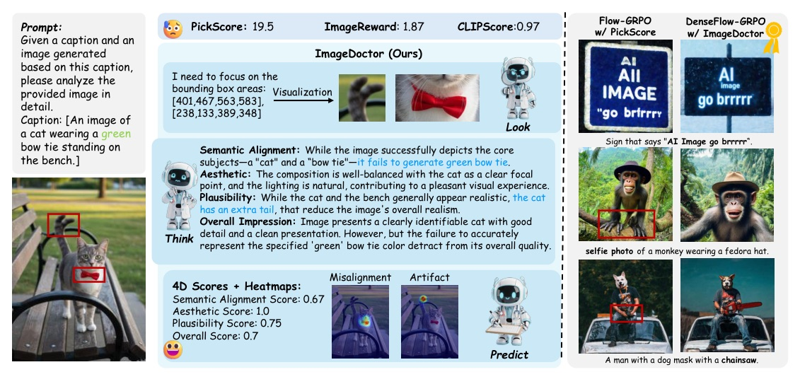
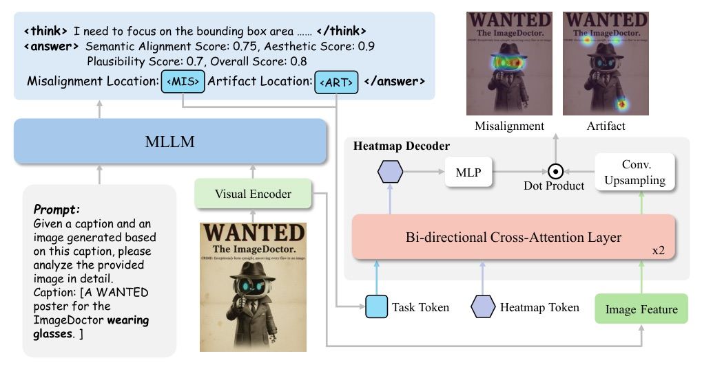
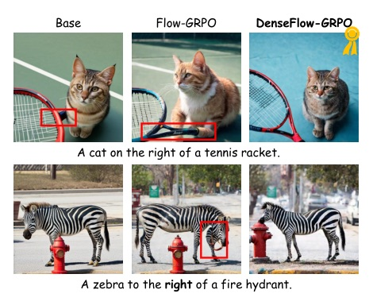
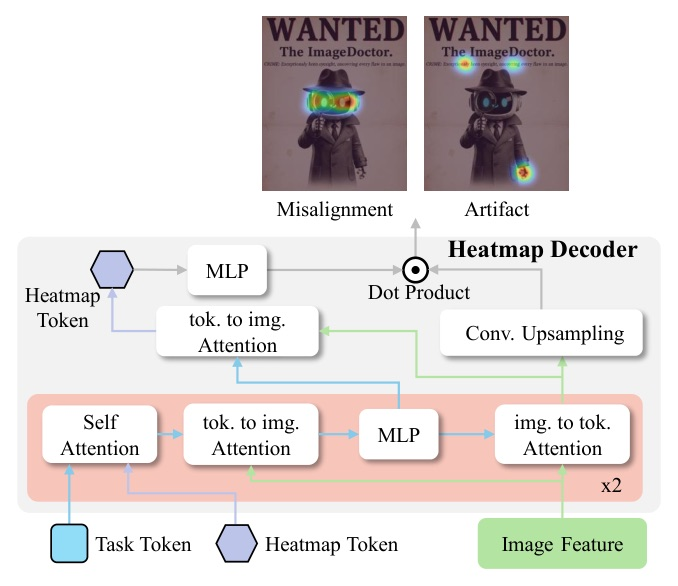

A VLM evaluator that returns four scores plus two spatial heatmaps, then turns those heatmaps into dense rewards for T2I RL.
Single scalar reward is too blunt for modern T2I failures.
ImageDoctor asks the evaluator to look for local flaws, think about them, and predict multi-aspect scores plus heatmaps.


The real trick is changing the reward from a label to a map.
Scalar reward pressures the whole image; dense reward pressures the flawed region. That is why the method can attack local artifacts instead of merely ranking samples.
| Method | Avg PLCC | Avg SRCC | Semantic PLCC | Overall PLCC |
|---|---|---|---|---|
| RichHF | 0.586 | 0.582 | 0.474 | 0.580 |
| ImageDoctor | 0.741 | 0.724 | 0.808 | 0.745 |
| Method | Artifact CC | Artifact KLD | Misalign CC | Misalign KLD |
|---|---|---|---|---|
| RichHF | 0.556 | 1.652 | 0.212 | 2.933 |
| ImageDoctor | 0.571 | 1.477 | 0.225 | 2.863 |
| Method | GenAI PLCC | RichHF PLCC | RichHF SRCC | TIFA PLCC | TIFA SRCC |
|---|---|---|---|---|---|
| EvalMuse | 0.498 | 0.712 | 0.749 | 0.549 | 0.518 |
| ImageDoctor | 0.514 | 0.740 | 0.764 | 0.808 | 0.799 |
| Setting | Avg PLCC | Artifact CC | Misalign CC |
|---|---|---|---|
| Cold Start Stage 2 | 0.720 | 0.558 | 0.224 |
| w/o look | 0.714 | 0.534 | 0.160 |
| w/o think | 0.708 | 0.542 | 0.190 |
| Training / reward | ImageReward | CLIPScore | UnifiedReward |
|---|---|---|---|
| Base | 0.818 | 0.951 | 2.903 |
| Flow-GRPO + PickScore | 1.002 | 0.941 | 2.940 |
| Flow-GRPO + ImageDoctor | 1.029 | 0.956 | 2.960 |
| DenseFlow-GRPO + ImageDoctor | 1.100 | 0.969 | 3.000 |


Accepted, but not without useful doubts.
Reviewers liked dense interpretable feedback, but pressed on backbone dependence, runtime, reward hacking, visualization fairness, and RichHF-18K generalization.
“single scalar is often insufficient to capture the detailed flaws of the generated images.”
單一分數不足以描述生成圖的細部缺陷。§1 p.1
“ImageDoctor follows a ‘look-think-predict’ paradigm, providing rich feedback with four-dimensional scores and heatmaps...”
ImageDoctor 先看缺陷區域、再推理、最後給分，輸出四維分數與熱圖。Fig.1 caption p.2
“ImageDoctor achieves the best performance across all dimensions, substantially improving semantic alignment (PLCC: 0.808 vs. 0.474) and raising the average PLCC from 0.586 to 0.741...”
在 RichHF-18K 上，ImageDoctor 將平均 PLCC 從 0.586 提升到 0.741，語義對齊 PLCC 從 0.474 提升到 0.808。§5.2 p.7
“the former enhances spatial localization of flaws, while the latter strengthens semantic reasoning for accurate evaluation.”
look 強化缺陷定位，think 強化語義推理，兩者互補。§5.3 p.8
“DenseGRPO’s heatmap-based dense reward design can target and refine local details to eliminate such flaws.”
DenseFlow-GRPO 的熱圖密集獎勵能針對局部細節施壓，減少局部瑕疵。§6.2 p.9
Today’s takeaway: for image generation, reward quality may depend less on one stronger scalar and more on exposing where the model failed.